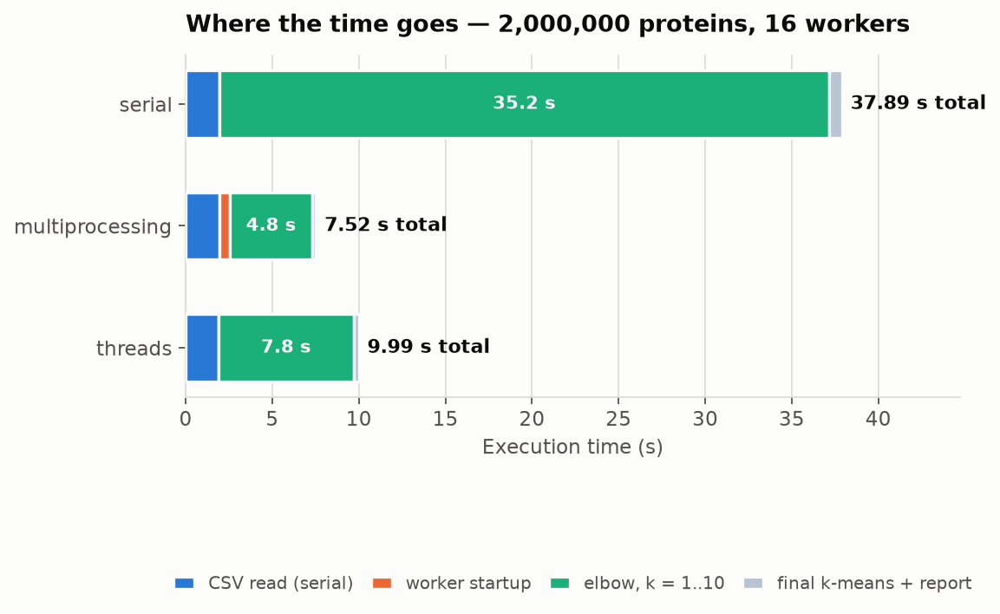
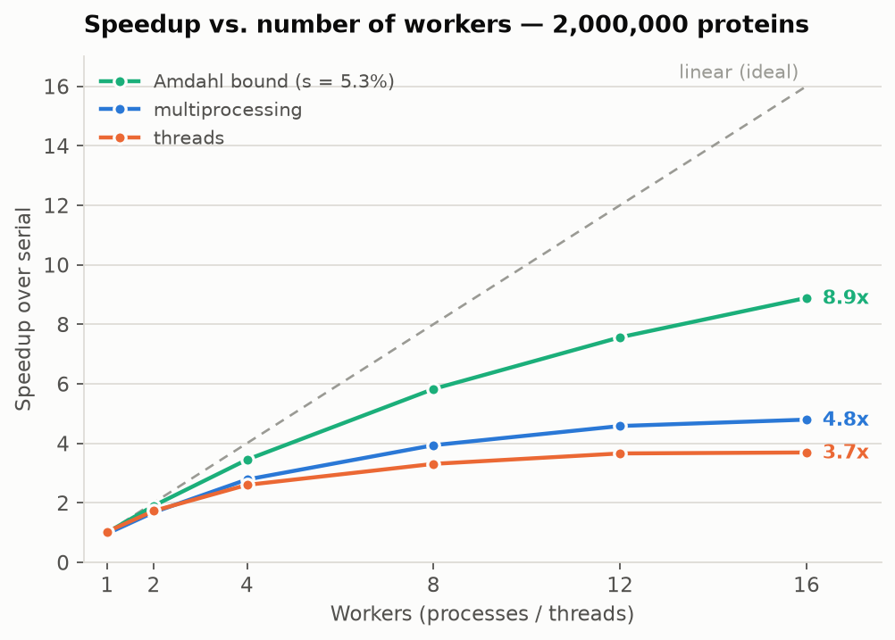
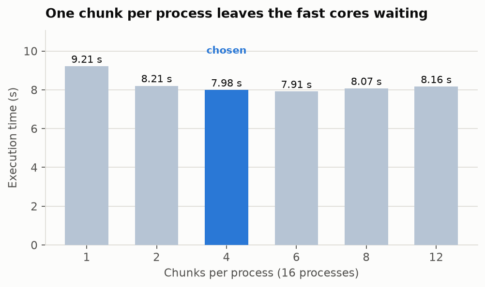

Measurements, scaling curves and the Amdahl analysis for the serial, multiprocessing and threaded programs — the source material for the part-four report.
Nothing else ran on the machine. The headline is the median of three interleaved runs after a discarded warm-up, and every sweep carries its own serial reference measured inside the same block — because under sustained load the CPU settles into a lower clock, and the same program takes 35.05 s cold against 37.35 s in steady state. Speedups survive that drift (5.19× cold, 5.07× warm); absolute times may only be compared within a block. An earlier set, taken while other copies of the programs were running, was discarded entirely.
Both parallel versions apply the same data parallelism (SPMD) to the inner loop of k-means, which is where all the time goes. The dataset is divided once; every worker then runs the identical step on its own slice and returns three small numbers per cluster.
| Step | Decision |
|---|---|
| Decomposition | One k-means iteration over one chunk of the dataset is a task |
| Assignment | Each worker assigns its points to the closest centroid, then reduces them to points per cluster, feature sums per cluster and chunk inertia |
| Orchestration | Only the centroids travel out (k × 2 floats), only the partial sums come back (k × 3 values); the master adds them up and moves the centroids — one map-reduce round per iteration |
| Mapping | One worker per logical core; the operating system places them |
The mechanism is the only difference between the two programs.
lab1-proteins-mp.py creates one mp.Pool(mp.cpu_count())
whose initializer hands each process the dataset a single time, then calls
pool.starmap per iteration. Separate address spaces, no GIL.
lab1-proteins-th.py starts and joins os.cpu_count()
threads on every iteration; they share memory, so each receives its chunk as a NumPy view with
no copy and appends its partial result to one shared list behind a Lock. That
version gains anything at all only because NumPy releases the GIL while it computes.

| Phase | Serial | Multiprocessing | Threads |
|---|---|---|---|
| CSV read (never parallel) | 1.97 s | 1.94 s | 1.91 s |
| Worker startup | — | 0.62 s | ~0 s |
| Elbow, k = 1…10 | 35.17 s | 4.75 s | 7.79 s |
| Final k-means + report | 0.74 s | 0.20 s | 0.29 s |
| Total | 37.89 s | 7.52 s | 9.99 s |
Taken on its own, the parallelized section speeds up 7.4× with processes and 4.5× with threads. The whole-program figures are lower because the serial read and the pool startup are charged against the total — which is exactly what Amdahl's law describes.

| Workers | Multiprocessing | Speedup | Threads | Speedup | Amdahl bound |
|---|---|---|---|---|---|
| 1 | 36.83 s | 0.96× | 36.55 s | 1.03× | 1.00× |
| 2 | 21.10 s | 1.68× | 21.72 s | 1.73× | 1.90× |
| 4 | 12.73 s | 2.78× | 14.43 s | 2.60× | 3.45× |
| 8 | 9.00 s | 3.93× | 11.34 s | 3.31× | 5.82× |
| 12 | 7.73 s | 4.58× | 10.25 s | 3.66× | 7.56× |
| 16 shipped | 7.39 s | 4.79× | 10.16 s | 3.69× | 8.88× |
With a single worker both versions land on the serial time to within the measurement noise — 0.96× and 1.03×. One worker doing every chunk is the serial program plus the machinery around it, and that machinery is cheap enough to vanish into the ±4% spread between runs.
Past twelve workers the curves flatten. The last logical cores are SMT siblings and efficiency cores, and the k-means steps move far more data than they compute, so memory bandwidth runs out before arithmetic does. Threads beyond one per core only get worse: 24 threads 11.07 s, 32 threads 10.38 s, 48 threads 11.89 s, 64 threads 13.75 s.
Giving each process several chunks instead of exactly one is worth 16% of the total runtime — the single largest optimization found.

| Chunks per process | Time | Speedup |
|---|---|---|
| 1 | 9.21 s | 4.02× |
| 2 | 8.21 s | 4.52× |
| 4 chosen | 7.98 s | 4.64× |
| 6 | 7.91 s | 4.69× |
| 8 | 8.07 s | 4.59× |
| 12 | 8.16 s | 4.54× |
The cause is the processor. An i5-13500H has four performance cores and eight efficiency cores, so equally sized chunks do not take equal time. With one chunk per process, every iteration ends only when the slowest efficiency core finishes and the fast cores idle at the barrier. Cutting the data finer lets the pool hand spare chunks to whichever worker is free, and the fast cores simply do more of them.
There, a chunk is a thread. Extra chunks mean extra threads created and joined on every iteration, which is what the 24-to-64 thread measurements show: the balancing gain and the creation cost cancel out.
The serial fraction is the part no number of workers can shrink: the 1.94 s CSV read plus the ~0.08 s final label pass, against a 37.89 s total.
Measured against that bound, multiprocessing reaches 5.07×, or 57% of the 8.88× ceiling; threads reach 3.80×, 43% of it. The gap is not serial code. It is parallel overhead, load imbalance across unequal cores, and memory bandwidth.
The Karp–Flatt metric separates those out, deriving the effective serial fraction
from each measured speedup: e = (1/S − 1/N) / (1 − 1/N).
| Workers | Multiprocessing e | Threads e |
|---|---|---|
| 2 | 19.2% | 15.8% |
| 4 | 14.6% | 18.0% |
| 8 | 14.8% | 20.3% |
| 12 | 14.7% | 20.7% |
| 16 | 15.6% | 22.2% |
For multiprocessing e settles near 15% against 5.3% of real serial code: about
ten points of loss are overhead, and because e stays flat as workers are added,
that overhead is proportional rather than growing — the per-iteration dispatch and barrier, not
a bottleneck that worsens with scale. For threads e climbs steadily from 15.8% to
22.2%, which is the GIL: the parts of each iteration that run Python instead of NumPy cannot
overlap, and their relative weight grows as the parallel part shrinks.
Gustafson's law gives the optimistic reading for a growing problem: at the same 5.5% serial
fraction, a dataset scaled to 16 workers would show a scaled speedup of
s + p·N = 15.2×. The lab's dataset is fixed, so Amdahl is the bound that
applies — but the elbow-only figure of 7.4× shows what the implementation reaches once
the serial read is out of the picture.
Threads do have one real advantage: no data ever moves. The chunks are NumPy views, nothing is pickled, and there is no 0.62 s pool startup. It is not enough to cover the three costs above.
On the 50,000-protein development dataset, both parallel versions are slower than the serial one.
| Version | 50,000 rows | Speedup |
|---|---|---|
| Serial | 0.82 s | 1.00× |
| Multiprocessing | 1.39 s | 0.59× |
| Threads | 1.29 s | 0.64× |
The work per iteration is too small to cover process creation, dispatch and synchronization — the textbook case of overhead dominating a fine-grained workload. Parallelism pays here only at the two-million-row scale the lab asks for.
All three programs print identical results on both datasets, which is what makes the timings comparable at all.
They share the seed, the initial centroids and the arithmetic. The parallel versions only change the order in which partial sums are added, which does not move a centroid at this precision.